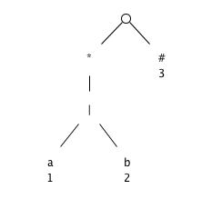
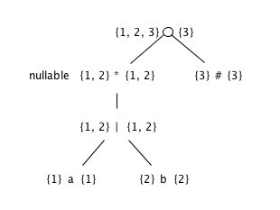
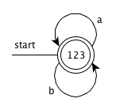

Extend the table of Fig. 3.58 to include the operators
| node n | nullable(n) | firstpos(n) |
|---|---|---|
| n = c_1 ? | true | firstpos(c_1) |
| n = c_1 + | nullable(c_1) | firstpos(c_1) |
Use Algorithm 3.36 to convert the regular expressions of Exercise 3.7.3 directly to deterministic finite automata.
(a|b)*
Syntax tree

firstpos and lastpos for nodes in the syntax tree

- The function followpos
<table>
<thead>
<tr>
<th>node n</th>
<th>followpos(n)</th>
</tr>
</thead>
<tbody>
<tr>
<td>1</td>
<td>{1, 2, 3}</td>
</tr>
<tr>
<td>2</td>
<td>{1, 2, 3}</td>
</tr>
<tr>
<td>3</td>
<td>∅</td>
</tr>
</tbody>
</table>
Steps
The value of firstpos for the root of the tree is {1, 2, 3}, so this set is the start state of D. Call this set of states A. We compute Dtran[A, a] and Dtran[A, b]. Among the positions of A, 1 correspond to a, while 2 correspond to b. Thus Dtran[A, a] = followpos(1) = {1, 2, 3}， Dtran[A, b] = followpos(2) = {1, 2, 3}. Both the results are set A, so dose not have new state, end the computation.
DFA

(a*|b*)*
((ε|a)|b*)*
(a|b)*abb(a|b)*
We can prove that two regular expressions are equivalent by showing that their minimum-state DFA's are the same up to renaming of states. Show in this way that the following regular expressions: (a|b)*, (a*|b*)*, and ((ε|a)b*)* are all equivalent. Note: You may have constructed the DFA's for these expressions in response to Exercise 3.7.3.
Refer to the answers of 3.7.3 and 3.9.2-1
Construct the minimum-state DFA's for the following regular expressions:
Do you see a pattern?
To make formal the informal claim of Example 3.25, show that any deterministic finite automaton for the regular expression
(a|b)*a(a|b)...(a|b)
where (a|b) appears n - 1 times at the end, must have at least 2n states. Hint: Observe the pattern in Exercise 3.9.4. What condition regarding the history of inputs does each state represent?